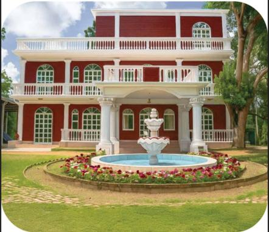
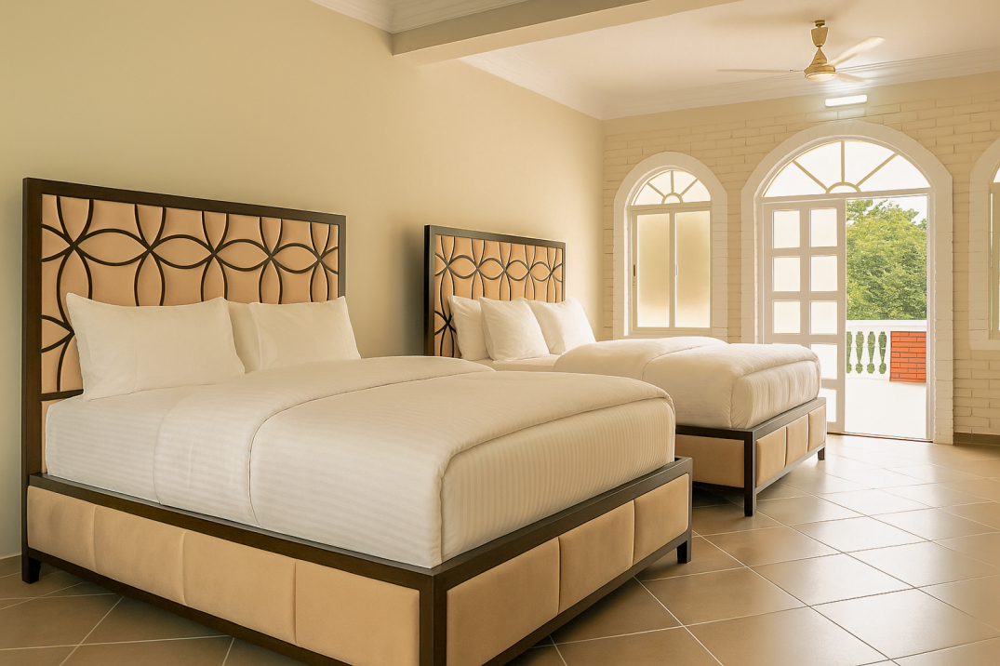
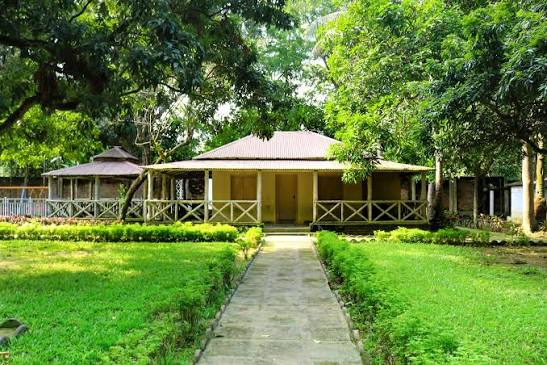
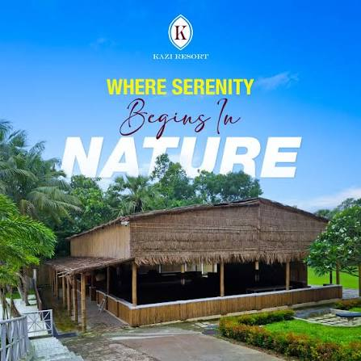
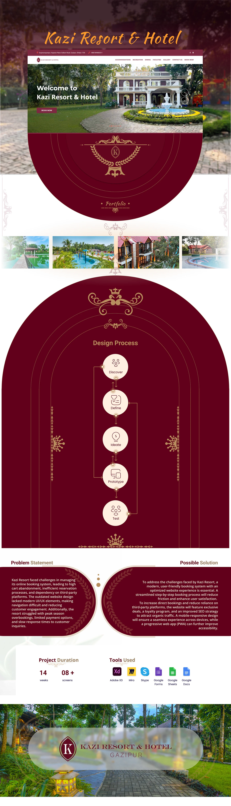
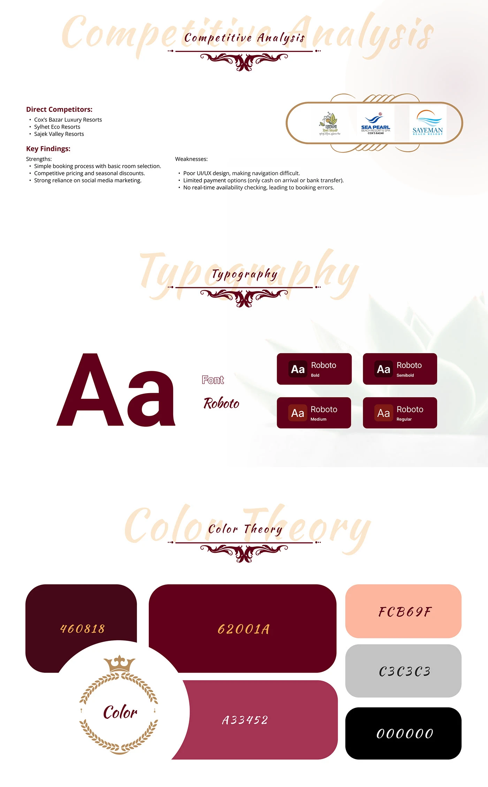
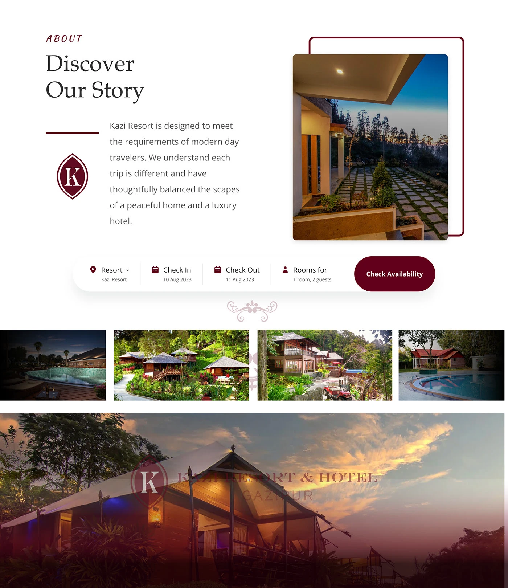

Hospitality · Responsive web · Apex DMIT
Kazi Resort & Hotel
A resort losing bookings to its own website — and to the third-party platforms it had come to depend on. Fourteen weeks to win the direct booking back.
- Role
- Research, UX design, UI design
- Duration
- 14 weeks, Apex DMIT
- Platform
- Responsive website
- Client
- Kazi Resort & Hotel, Gazipur
- Tools
- Adobe XD, Miro, Google Forms & Sheets
01The problem
The booking system was losing people. High cart abandonment, an inefficient reservation process, and a growing dependence on third-party platforms that took a cut of every stay.
The site itself was part of it: an outdated design with navigation people struggled through. Behind it sat operational problems the website could not hide — peak-season overbookings, limited payment options, and slow replies to enquiries.
02What the competition got wrong
Three direct competitors were pulled apart first: Cox's Bazar luxury resorts, Sylhet eco resorts and Sajek Valley resorts.
They were good at the commercial side — simple room selection, competitive pricing, seasonal discounts, heavy social media presence. The gaps were consistent, and all three shared them:
- Navigation people got lost in, on sites that looked dated.
- Payment on arrival or bank transfer only — no way to actually pay online.
- No real-time availability, which is where the booking errors come from.
That third one is the useful finding. If nobody in the market shows live availability, the resort that does removes the reason guests go to a third-party platform in the first place.
03The response
- A step-by-step booking flow rather than one long form, to take friction out of the moment people were abandoning.
- Reasons to book direct — exclusive deals and a loyalty programme, aimed squarely at the third-party dependence.
- SEO built in, so organic traffic arrives at the resort rather than at an aggregator.
- Mobile-responsive throughout, with a progressive web app as the next step for accessibility.
The resort itself
The photography the site is built around — supplied by the resort, and the reason the palette had to sit back rather than compete.




The process
-
Discover
Where bookings were being lost, and what the competition already did well.
-
Define
The problem stated plainly, and the solution scoped against it.
-
Ideate
Structure and flow — especially the booking path, step by step.
-
Prototype
Eight-plus screens across mobile and desktop, in the resort's own colours.
-
Test
Then iterate on what the booking flow actually did to people.
04The system
Roboto across four weights, and a deep maroon palette —
#460818 and #62001A carrying the brand, with
#A33452 and a warm #FCB69F for accent.
Unusual for a booking site, where the convention is white and blue. It matches the resort's existing identity rather than the category, which is the point: the site had to feel like this resort, not like a travel aggregator.




05Credit
Research, UX and UI at Apex DMIT for Kazi Resort & Hotel, Gazipur. Published on Behance.
Apex Protinidhi app
A Bengali-first app for property field agents — leads, voice notes and earnings in one place.
Say hello
Happy to walk through this project, or any of the others, on a call.